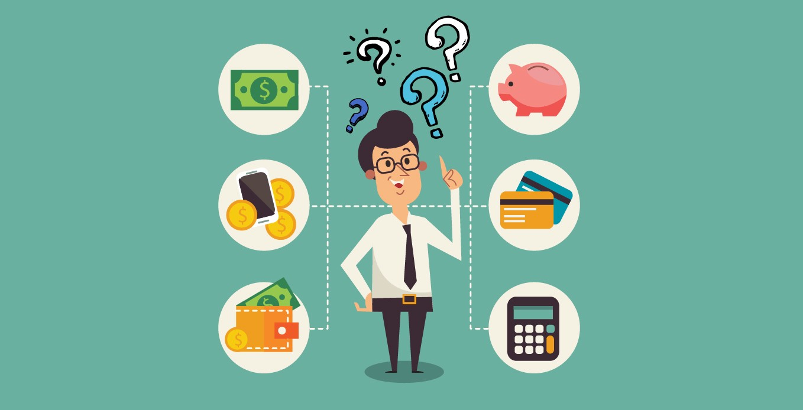

Cuándo y cómo tomamos deciciones financieras
¿Que se espera del curso?
- Aprender que significa tener unas finanzas personales sanas
- Como hacer una evaluación integral de las mismas
- Descubrir en que fallamos en el anejo de nuestro dinero
- Crear tu plan financiero básico
- Empezar a aplicar estrategias para mejorar tu relación y el uso que haces con tu dinero
Finanzas personales
¿Para qué?
Las decisiones financieras se toman para administrar y optimizar el uso de nuestros recursos económicos, con el objetivo de satisfacer necesidades, alcanzar metas personales y familiares, y mejorar nuestra calidad de vida.
¿Cómo y cuándo tomamos decisiones financieras?
Tomamos decisiones financieras evaluando opciones y considerando factores como ingresos, gastos, metas y riesgos. Estas decisiones se toman constantemente, desde decisiones diarias, como la compra de un producto, hasta decisiones a largo plazo, como la adquisición de una casa.
Todos los días tomamos decisiones financieras:
- Consumo: Implica gastar dinero en bienes y servicios para satisfacer necesidades y deseos. Ejemplo corto: Comprar un café en la mañana.
- Ahorro: Consiste en reservar parte de nuestros ingresos para uso futuro o para cumplir metas financieras. Ejemplo corto: Guardar el 10% de nuestro salario mensualmente.
- Endeudamiento: Hacer uso de créditos o préstamos para cubrir gastos o adquirir bienes. Ejemplo corto: Pedir un préstamo para comprar un automóvil.
- Inversión: Destinar recursos para generar ingresos adicionales o aumentar nuestro patrimonio. Ejemplo corto: Comprar acciones de una empresa en la bolsa.
- Administración de riesgos: Implica evaluar y mitigar posibles pérdidas financieras. Ejemplo corto: Contratar un seguro de vida para proteger a nuestra familia.
